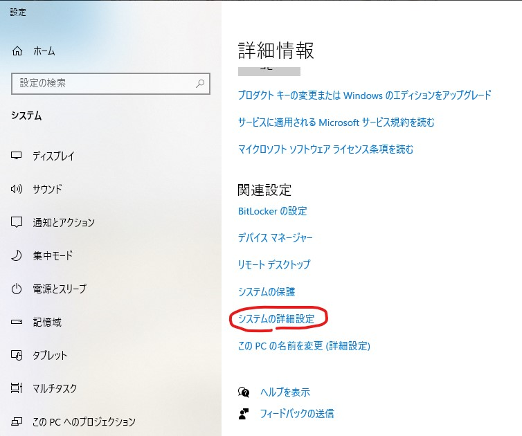
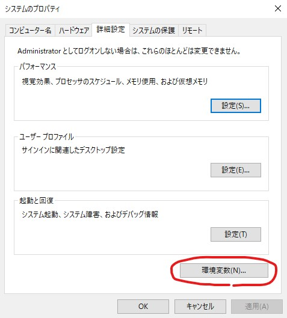
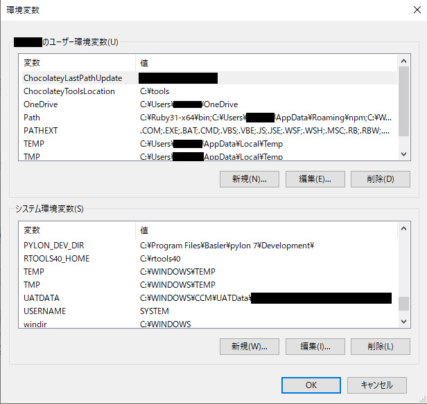
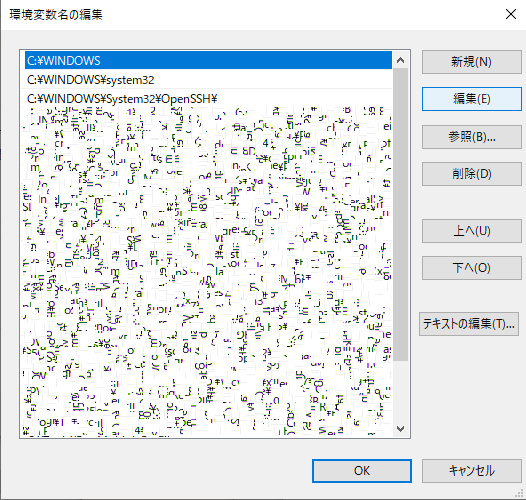

環境変数Pathを設定すると、実行ファイルをフルパス（例えば、c:\tmp\abc.exe）でなく、実行ファイル名だけ（例えば、abc.exe）で実行することができます。
環境変数Pathを設定するダイアログは案外開くのに手間取ります。以下の方法が簡単な開き方の一つだと思います。
[Windows]キー＋[Pause/Break]キー
[システムの詳細設定]をクリック

図1
[環境変数]ボタンをクリック

図2
以下の画面が開きます。

図3
Windowsには、システム環境変数とユーザー環境変数があります。
システム環境変数はそのPCを利用する全てのユーザー用の設定で、ユーザー環境変数は各ユーザー個別の設定です。
Python・CMake・GitなどのPathは、システム環境変数に登録するのが良いかもしれません。
Pathをダブルクリックすると以下の画面が開きます。

図4
Pathを追加する場合、[新規]ボタンを押し所望のフォルダを指定してください。
環境変数Pathは上の行のパスが優先されます。
図4の場合、仮に実行ファイルXYZ.exeがC:\WINDOWSフォルダにもC:\WINDOWS\system32フォルダにもあったとします。
コマンドプロンプトでXYZ.exeを実行ファイル名だけで実行すると、より上側に設定されているC:\WINDOWSフォルダのものが実行されます。
いろいろなソフトウェアで利用される実行ファイルは思いもよらないPathに存在する場合があります。
例えばpython.exeがあります。
私の環境では、C:\Users\[YOUR ACCOUNT]\AppData\Local\Microsoft\WindowsApps\
のpython.exeが邪魔をして、python.exeが実行できなくなったことがありました。
確実に実行したい実行ファイルのあるフォルダを、[上へ]ボタンでより上側に設定しましょう。
環境変数のQA
ある環境変数でアプリAが起動したとします。アプリAが起動中に、環境変数が変更されました。（例えばインストーラなどで）起動中のアプリAでは変更された環境変数が適用されるでしょうか？
基本は適用されません。適用したい場合はアプリAを再起動しなくてはいけません。Pathも同様です。
同じ変数がシステム環境変数とユーザー環境変数の両方で設定された場合はどちらが優先されますか？
ユーザー環境変数が優先されます。ただし、Pathは特別で、システム環境変数の後ろに、ユーザー環境変数が追加されます。（つまりシステム環境変数の方が優先される）